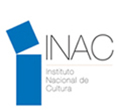
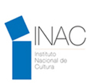

A multidisciplinary team with a strong cultural and social scientific motivation that works for the benefit of Panama and its archaeological heritage. They seek funds from national and international public and private entities interested in the commitment to the conservation and investigation of the archaeological heritage of Panama.
A group of four students from Worcester Polytechnic Institute designed and created this self-guided tour mobile application as part of their Interactive Qualifying Project (IQP). The Interactive Qualifying Project is one of the distinctive elements of Worcester Polytechnic Institute’s signature project-based curriculum, giving every WPI student the experience of working on interdisciplinary teams to solve a problem or need that lies at the intersection of science and society.
A group that organizes and seeks funding for local community efforts. These range from construction projects to educational opportunities and events that engage the community with the environment, children, cultures, health, and education. FPP serves as a point of contact for US-based student organizations wishing to work in Panama.

 
